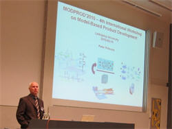
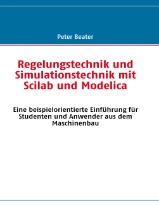
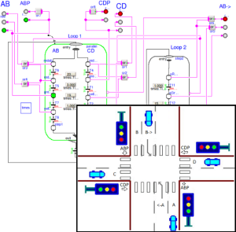
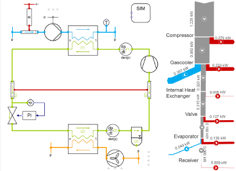
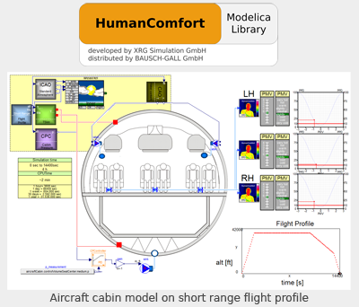
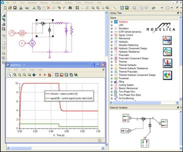
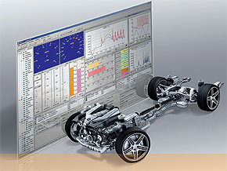
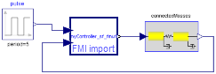
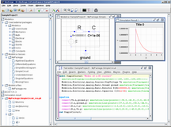
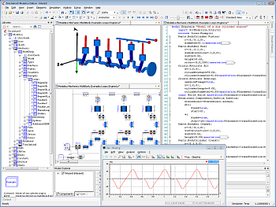

Modelica Newsletter 2010-1 (April 2010)
Table of Contents
- Letter from the Board
- Modelica Association News
- Modelica Specification 3.2 Released
- 8th Modelica Conference, March 20-22, 2011
- 3rd EOOLT Workshop in Oct. - Call for Papers
- OpenModelica and MODPROD Workshops
- Educational News
- Library News
- SCADE Suite - Modelica Interface
- Thermodynamic Modelica Libraries and Tools
- HumanComfort Library 1.0 is now available
- Tool News
Letter from the Board
Dear Modelica interested,
The new year starts with a lot of interesting information from the Modelica community:
- After only 10 months, the new version 3.2 of Modelica has been released, see below. Highlights are improved initialization by the new built-in operator "homotopy", functions as input arguments to functions, improved operator overloading, improved support for object libraries, IP protection, and the support of Unicode for the descriptive/documentation part of Modelica, so that, e.g., Arabic and Asian characters can be used.
- The next Modelica Conference will take place in March 2011 in Dresden, see below. Please, take this important event in to account in your planning. We plan to organize the conference in a similar way as the last time in Como.
- Other Modelica-related events are the EOOLT-Workshop in Oct. 2010 in Oslo that is dedicated not only to Modelica but to other object-oriented languages as well, and the successful OpenModelica and MODPROD workshops that took place in February.
- A new introductory book to Modelica from Peter Beater has been published (for German speaking users). Dietmar Winkler provides results of a student project at Telemark University College that used the Modelica_StateGraph2 library to model a traffic light control with Modelica state machines.
- It is now possible to import C-code generated by the SCADE Suite into a Modelica model (SCADE is used to define safety critical embedded software). Furthermore, new commercial fluid and media, and the HumanComfort 1.0 libraries are available.
- The new FMI-for-model-exchange standard has been published to significantly improve the exchange of models between tools on C source or binary code level, especially of Modelica tools. The new open-source Modelica tool JModelica.org is dedicated for optimization of Modelica models (a subset of Modelica is supported). AMESim now provides Modelica support. New versions of Dymola, OpenModelica and SimulationX are now available. The new Silver 2.0 simulation environment is used for co-execution of automotive control software and of vehicle simulation models. The support of FMI in Silver 2.0 gives much better possibilities to import Modelica models from tools that export models in FMI format (currently Dymola 7.4, and soon SimulationX).
If you have interesting news for the Modelica community, please contact the newsletter editor (Michael Tiller) for information on how to submit newsletter articles for possible inclusion in the next newsletter. The deadline for articles for the next newsletter is June 30, 2010.
Best wishes from the Board of the Modelica Association:
Martin Otter, Chairman (DLR Germany)
Peter Fritzson, Vice-Chairman (Linköping University, Sweden)
Michael Tiller, Secretary (Emmeskay, U.S.A.)
Hilding Elmqvist, Treasurer (Dassault Systèmes/Dynasim, Sweden)
Modelica Association News
Modelica Specification 3.2 Released
The new version 3.2 of the Modelica language was released on March 24, 2010. The specification document is available here in pdf format. This release is backward compatible to the previous 3.1 release. The essential changes with respect to 3.1 are:
- Improved Initialization
The new built-in operator "homotopy(actual, simple)" allows to define a simplified version of an expression to help in the solution of non-linear algebraic equation systems. The solution might be obtained by first solving the model with the "simple" expression and then continuously transforming it to the "actual" expression. Benchmarks such as for a large power plant and a large vehicle dynamics system demonstrate that steady-state initialization becomes much more reliable if this operator is appropriately used in a library, even without accurate initial guesses. - Functions as formal inputs to functions
It is now possible to pass a function as an input argument to a function. This feature is useful to, e.g., pass an integrand function to a quadrature function. - Improved operator overloading
- A new specialized class
operator recordis introduced with specialized typing rules (the type is identified by the class name; all other Modelica classes define the type by the public elements of a class). Overloaded operators can only be defined inside anoperator record. This change fixes a flaw in Modelica 3.1, since the look-up of overloaded operators is performed by the record class name. - Inheritance of an
operator recordis now allowed if defined via a short class definition, e.g., to define derived classes with units for the record elements, like deriving ComplexVoltage from Complex. - New overloaded element ‘0’ in order that operator record classes can be used as flow variables in connectors.
- A new specialized class
- Unicode support
The character encoding of Modelica classes is now precisely defined: Description strings, strings in annotations and in comments are Unicode characters. In all other cases, the subset of Unicode is used that corresponds to the 7-bit ASCII character set. Modelica files are UTF-8 encoded. This change allows to use, e.g., Arabian, Asian, Indian characters in all descriptive/documentation parts of a class. - Access control to protect intellectual property
The new annotation "Protection" is introduced to define in a standardized way which parts of an encrypted package are accessible by a user. Additionally, the new annotation "License" allows to define, e.g., start and expiration date and restrict the usage to particular machines. The intent is to enable a commercial library vendor to maintain one source version of their Modelica package that can be encrypted and used with several different Modelica tools (using tool specific encryption mechanisms). - Improved support of object libraries used by external functions
Object library, as well as C-header files can be included in a package and can be referenced with URIs (such as "modelica://MyLibrary/Resources/lib") in the external function annotations Library, Include, LibraryDirectory, and IncludeDirectory. Via standardized directory names, like win32, the tool can select the object library for the desired platform. - Various minor improvements
- Global name lookup has been introduced by starting a Modelica name with a "."
(e.g. "
.Modelica.Constants.pi"). - Constants can once again be modified unless declared final, as this is already used in existing packages.
- New C-functions ModelicaVFormatMessage and ModelicaVFormatError, to simplify message formatting in external functions.
- New annotation "groupImage" to associate images with parameter dialogs.
- New annotation "showStartAttribute" to define start and fixed attributes for variables in parameter dialogs.
- Global name lookup has been introduced by starting a Modelica name with a "."
(e.g. "
This article is provided by Martin Otter (DLR-RM) .
8th Modelica Conference, March 20-22, 2011
The Modelica Association and Fraunhofer IIS EAS organize the next International Modelica Conference, to be held at the Auditorium Centre of the Technische Universität Dresden, Germany, on March 20-22, 2011.
The conference will cover all Modelica related topics: language design, numerical and symbolic methods, reusable model libraries, software tools, scientific and industrial applications. Similar to the last Modelica Conference, tutorials will be held on Sunday afternoon, while regular sessions, poster sessions, tool presentations, and user's group meetings will be held on Monday and Tuesday. A conference dinner is planned for Monday in the evening.
Important dates
| Submission of extended abstracts or draft papers: | November 15, 2010 |
| Notification of acceptance: | December 13, 2010 |
| Final paper submission and early registration: | January 17, 2011 |
| Conference tutorials: | March 20, 2011 |
| Conference sessions: | March 21-22, 2011 |
About the venue
The Auditorium Centre is located on the campus of the Technische Universität Dresden, 10 minutes by bus or tram from the Dresden main station, or 20 minutes to walk. Railway connections are available from the Dresden main station to Dresden Airport (30 min), and to the Leipzig Airport (100 min). The site is also easily accessible by motorway. Updated information about the conference and the Call for Papers, Libraries, Exhibitors and Tutorials are available at: www.modelica.org/events/modelica2011
This article is provided by Christoph Clauss (Fraunhofer) .
3rd EOOLT Workshop in Oct. - Call for Papers
The 3rd Workshop on Equation-Based Object-Oriented Languages and Tools, EOOLT'2010, will take place in Olso, Norway, on one day of October 3-5, 2010 (the exact date will be fixed soon).
During the last decade, integrated model-based design of complex cyber-physical systems (which mix physical dynamics with software and networks) has gained significant attention. Hybrid modeling languages based on equations, supporting both continuous-time and event-based aspects (e.g. Modelica, SysML, VHDL-AMS, and Simulink/ Simscape) enable high level reuse and integrated modeling capabilities of both the physically surrounding system and software for embedded systems. The EOOLT workshop addresses the current state of the art of such equation-based object-oriented (EOO) modeling languages, as well as open issues that currently still limit their expressiveness, correctness, and usefulness. Moreover, integration of and comparison with related approaches and languages, such as actor oriented, synchronous, and domain specific languages, are of particular interest.
Submission
Researchers and practitioners are invited to submit full-length papers (up to 10 pages) for consideration by the program committee. Papers are welcome that offer presentations and discussions of existing languages and tools, their capabilities and limitations; reports on practical experience; demonstrations of languages, tools, ideas, and concepts; positions related to relevant questions; and discussion topics. If a paper has been accepted, the authors should present the paper at the workshop and also have the paper published in electronic proceedings (and a local conference paper version) at Linköping University Electronic Press
Important Dates
| Submission deadline: | June 10, 2010 |
| Author notification: | July 1, 2010 |
| Camera-ready: | September 10, 2010 |
| Workshop: | October 3, 4, or 5 (one day) |
Organizing Committee
- Peter Fritzson (Chair), Linköping University
- Edward A. Lee (Co-Chair), U.C. Berkeley
- François E. Cellier (Co-Chair), ETH Zürich
- David Broman (Co-Chair), Linköping University
This article is provided by Peter Fritzson (Linköping University) .
OpenModelica and MODPROD Workshops

OpenModelica'2010
The 2nd OpenModelica Annual
Workshop, organized by the Open Source Modelica Consortium was held
successfully in Linköping, Sweden, on February 8, 2010. The workshop
was attended by approximately 45 people from industry and academia.
New results and applications regarding the OpenModelica platform were
presented. The program and the presentations are available from www.openmodelica.org
MODPROD'2010
The 4th international MODPROD Workshop on Model-Based Product Development, organized by the MODPROD competence center at Linköping University, was successfully held at Linköping University, Linköping, Sweden, February 9-10, 2010. The workshop was attended by over 100 people from industry and academia. Five tutorials were held in the morning the first day, followed by poster presentations, and research presentations. The second day started by keynote presentations by industry representatives from OMG and Dassault Systemes on the modeling technologies SysML and Modelica, respectively. A number of interesting research and industry presentations were held on modeling technology and applications, both hardware and software modeling, and combined.
The program and the presentations are available from www.modprod.liu.se.
This article is provided by Peter Fritzson (Linköping University) .
Educational News
Introductory Textbook on Modelica

This books gives an introduction to two aspects of the design of technical systems: Analytical analysis and control of their stability and nonlinear simulation of their behaviour in the time domain. The first part of the book covers the standard methods of classical control and thus gives a foundation to understand modern simulation tools. In the second part several technical examples are used to explain modelling and simulation approaches. They start with a simple linear electrical oscillator, followed by a nonlinear pendulum, a bouncing ball, heat conduction in a long rod and a pneumatic bellows. These examples are first used to introduce simple numerical integration algorithms and their pitfalls and later to explain basic concepts and operators in Modelica. The most important Modelica keywords and operators are listed and explained in a separate chapter. The Modelica models developed in the book have been tested with several tools and can be downloaded here.
The book is intended for students and engineers of mechanical engineering. Especially in the first part, there are numerous examples and problems to illustrate the theory. An appendix gives a summary of the required mathematical methods and physical models and answers to the problems.
The author contributed to early versions of Modelica libraries. He has been teaching control, modelling and simulation for more than ten year at the faculty of Mechanical Engineering and Automation in Soest/Germany.
Regelungstechnik und Simulationstechnik mit Scilab und Modelica. Eine beispielorientierte Einführung für Studenten und Anwender aus dem Maschinenbau. P. Beater. Books on Demand, Norderstedt. 2010, ISBN 9783837050103.
This article is provided by Peter Beater (Fachhochschule Südwestfalen) .
StateGraph2 Student Project

In the autumn semester 2009 the new state diagram library Modelica_StateGraph2 was used to simulate a simple automation system as part of 2nd year electrical engineering bachelor course Cybernetics Project for Electric Power at Telemark University College.
None of the participating students had used Modelica before. So for them it was an interesting challenge to model in Modelica. After having learned about the underlying general theory of state diagrams it was up to the students to choose an automation system to apply state diagram control. In this case they have chosen a simple traffic light control. Once the theory was understood the Modelica_StateGraph2 made it very easy to realise the control based on three simple components Step, Transition, and Parallel. Very helpful for developing and testing were also the visualisation features of the active states by Dymola (the modelling tool used in this course).
If interested, one can download the simple traffic light example and the final project report (report is in Norwegian only).
This article is provided by Dietmar Winkler (Telemark University College) .
Classes for Dymola/Modelica
BAUSCH-GALL GmbH offers the following training classes in German language either in our office or at your site:
- Next 2-day training course Dymola and Modelica in our office on June 21-22, 2010
- Next 1-day introduction to Dymola and Modelica in our office on May 10, 2010
Information about training courses of BAUSCH-GALL GmbH.
This article is provided by Ingrid Bausch-Gall (BAUSCH-GALL GmbH) .
Library News
SCADE Suite - Modelica Interface

The Esterel SCADE® family of products offers an integrated design and development environment for mission and safety-critical embedded software applications. SCADE Suite® offers graphical design entry, verification through simulation and formal methods, and certified code generation. SCADE also includes integrated requirements management, configuration management, and automatic documentation generation, shortening the time-to-certification. SCADE Suite is a design and development tool with a long history in the aeronautics, rail and nuclear domains with reference customers such as Airbus, Areva, Thales, Eurocopter, Liebherr, Rockwell Collins and Lockheed Martin.
A new interface for importing Scade Suite code was developed by DLR-RM and Esterel Technologies. With a few clicks you can generate a Modelica block out of Scade Suite that can be directly used and simulated in Modelica (see picture on the right). This Modelica block calls an external function periodically, where the C-code generated in Scade Suite is invoked. Features of the interface:
- There are no restrictions regarding complexity or internal states of the Scade function.
- The current version is restricted to scalar Boolean, Integer and Real inputs/outputs.
- For each input/output a visible connector is created and the size of the block is adapted to the number of inputs/outputs.
- The generated Modelica block should be useable by every Modelica simulator that supports external functions and either Modelica 2 or Modelica 3.
- The block was tested with Dymola 6.1, 7.1 and 7.4.
By using the new interface, you are capable of testing code generated by Scade Suite in a physical simulated environment. It is also possible to test interactions of more than one Scade blocks in Modelica. Typical applications are:
- Testing of flight controller in a physical aircraft model.
- Controller testing in automotive area.
- Energy management software testing.
If you need additional information regarding Scade Suite please visit Esterel Technologies. If you are interested in the Scade-Modelica interface please contact Tobias Knostmann.
This article is provided by Daniel Schlabe (DLR-RM) and Tobias Knostmann (Esterel Technologies) .
Thermodynamic Modelica Libraries and Tools

Recently, TLK-Thermo GmbH and Institut für Thermodynamik (IfT), TU Braunschweig have released new versions of the Modelica library TIL and the fluid property library TILMedia. TLK would like to use this opportunity not only to present the TIL library, but the whole toolkit offered by TLK for design and analysis of thermodynamic systems.
The libraries and tools are a result of long term experience in thermal science, simulation techniques and software design at TLK and IfT. The TIL library provides models for steady-state and transient simulation of thermodynamic systems such as heat pump, refrigeration, a/c, cooling and Rankine systems.
A well designed, simple object-oriented structure maintains model readability and ease of extensibility. To access the computation routines for fluid property data of REFPROP and other fluid or material databases, TIL uses the fluid property library TILMedia. TIL can be completely embedded in Simulink, Labview, or other programs using TISC, a tool coupling software by TLK. The new TIL release includes adaptations for an improved post-processing of the simulation results e.g. with other TLK tools, such as StateViewer for state diagrams or EnergyViewer for energy or exergy flow charts.
An introduction to TIL is offered as a training course. To learn more, please contact Wilhelm Tegethoff.
This article is provided by Denise Janotte (TLK-Thermo GmbH) .
HumanComfort Library 1.0 is now available

In Modelica Newsletter 2009-2 ,
BAUSCH-GALL announced the (world-wide) distribution of commercial Modelica Libraries.
Now we are glad to inform you that one more library is available.
HumanComfort Library 1.0 was released in April 2010 (by XRG Simulation GmbH)
The HumanComfort Library provides basic models
to estimate the human comfort of occupants or a group of occupants within an airconditioned zone and provides mathematical criteria and graphical visualizations. It is developed within the European research project EuroSysLib-D.
The HumanComfort Library has a modular approach. The use of standardized interfaces via Modelica Fluid connectors enables an easy implementation in existing Modelica libraries. Each of the four HumanComfort modules is exchangeable.
The user may combine an existing building simulation model with the HumanComfort module and additionally use the HumanComfort weather and comfort module.
The library consists of three packages:
- HumanComfort package for thermal comfort analysis
- Weather package provides a weather model for annual simulation
- Zone package
- Mobile applications for aircraft and automotive cabin models
- Stationary applications for building simulation models including easy HVAC (Heating Ventilation Air Conditioning) systems
Our range of Modelica Libraries is available at http://bausch-gall.de/molib.htm.
If you need more information, please contact info@bausch-gall.de.
This article is provided by Ingrid Bausch-Gall (BAUSCH-GALL GmbH) .
Tool News
Functional Mockup Interface (FMI)

On Jan. 26, version 1.0 of the open Functional Mockup Interface was released ( FMI for model exchange 1.0). This interface was developed in the ITEA2 MODELISAR project to support the model exchange between simulation tools. The FMI development was initiated and is organized by Daimler. The intention is that a modelling environment can generate C-Code of a dynamic system model that can be utilized by other modelling and simulation environments either in source or binary form.
Models are described by differential, algebraic and discrete equations with time-, state- and step-events. In particular, all Modelica 3.2 models can be handled and all Modelica variable attributes (like units and display units) as well as description texts can be exchanged. The models to be treated by this interface can be large for usage in offline or online simulation or can be used in embedded control systems on micro-processors. It is possible to utilize several instances of a model and to connect models hierarchically together. A model is independent of the target simulator because it does not use a simulator specific header file as in other approaches. A model is distributed in one zip-file with the extension ".fmu" (Functional Mockup Unit) that contains several files:
- An xml-file contains the definition of all variables in the model and other model information. It is then possible to run the model on a target system without this information, i.e., with no unnecessary overhead.
- All needed model equations are provided with a small set of easy to use C-functions. A new caching technique allows a more efficient evaluation of the model equations as in other approaches. These C-functions can either be provided in source and/or binary form. Binary forms for different platforms can be included in the same model zip-file.
- Further data can be included in the zip-file, especially maps and tables needed by the model.
The FMI specification can be downloaded from the FMI web page. There is also a free software development kit from QTronic to demonstrate basic use of FMUs on Windows, as starting point for developing applications that create or process FMUs. It contains C sources for various discrete and continuous FMU models, a batch file for compiling and zip'ing these models, an XML parser for parsing the model description of an FMU and a simple simulation program that runs a given FMU and outputs the result as CSV file. This SDK is also available for Linux (by adaptations from Michael Tiller).
It is planned to support FMI 1.0 in 2010 at least for the following modelling and simulation environments and therefore the model exchange between these environments will be greatly simplified:
- Modelica Simulation Environments:
AMESim (export and import) Dymola 7.4 (export and import; now available, see below) SimulationX (export and import; soon available, see below) - Other Simulation Environments:
EXITE ACE (export and import) EXITE (import) Silver 2.0 (import; soon available, see below) SIMPACK (import) TISC (import)
The MODELISAR consortium plans to publish further parts of the FMI, especially for coupling of different simulation tools via co-simulation and for coupling of simulators with applications like testing, optimization, and product lifecycle management.
This article is provided by Martin Otter (DLR-RM) .
AMESim Rev9 (with Modelica Platform)

LMS is an engineering innovation partner for companies in the automotive, aerospace and other advanced manufacturing industries.
LMS has incrementally incorporated Modelica support in LMS Imagine.Lab AMESim, widely recognized today for modeling and analysis of multi-domain, intelligent systems to predict their performances. Supporting the Modelica Standard extends the existing capabilities of LMS Imagine.Lab AMESim to include native AMESim as well as Modelica-based models.
AMESim - Modelica Platform offers:
- Modelica Editor: Writing of Modelica code
- Modelica Assembly: Graphical Edition of models from Modelica components
- Modelica Import Assistant: Creation of AMESim components based on the Modelica code
-
Existing AMESim features: Modeling, Simulation and Analysis of complete systems
• Couple mechanics, fluid, thermal and control algorithms, either with AMESim native models or with Modelica-based models, or combining Modelica models to non-Modelica AMESim components.
• Take advantage of the AMESim Platform facilities: powerful Numerical Solvers, Linear Analysis, Batch Runs, Software Interfaces and Scripting capabilities.
New in AMESim Rev9:
- New Experiments Manager: manage easily simulation environments and simulation results
- New Model Properties: attach documents and meta information to your model
- New Model History: add Author/Date/Comments associated to your models
- New 1D Plots and Modulo Plots: go further in post-processing and analysis
Further Improvements:
- Improved Help browser for Modelica libraries documentation
- Encryption of Modelica libraries
- Enhancements of the Modelica compiler
For further information on AMESim, please contact info@lmsintl.com or visit www.lmsintl.com:
http://www.lmsintl.com/imagine-amesim-1-d-multi-domain-system-simulation
This article is provided by Stéphane Neyrat (LMS) .
JModelica.org (Open Source Platform)

JModelica.org is an extensible Modelica-based open source platform for optimization, simulation and analysis of complex dynamic systems. The main objective of the project is to create an industrially viable open source platform for optimization of Modelica models, while offering a flexible platform serving as a virtual lab for algorithm development and research. A unique feature of JModelica.org is the extension Optimica, which complements Modelica with high-level language constructs dedicated to formulation of dynamic optimization problems. As such, JModelica.org is intended to provide a platform for technology transfer where industrially relevant problems can inspire new research and where state of the art algorithms can be propagated form academia into industrial use.
JModelica.org is a result of research at the Department of Automatic Control, Lund University, and is now maintained and developed by Modelon AB in collaboration with academia.
JModelica.org at a glance
- Model your systems using the object-oriented and equation-based language Modelica
- Craft your optimization specifications in the Optimica extension
- Solve your complex simulation and optimization problems using state of the art numerical algorithms
- Automate your work in the Python scripting environment
- Visualize your results
New features in JModelica.org 1.2.0
- Modelica compliance in compiler front-ends
- Arrays
- Functions
- Algorithms
- Dynamic optimization algorithm
- Automatic scaling of models
- Piecewise constant control profiles in optimal control formulations supported
- XML export
- Model metadata export fully compliant with the Functional Mockup Interface (FMI)
- Extended XML export of flattened, scalarized models, including user defined functions
- Python
- Intuitive high-level functions for common tasks, including optimization and simulation
- High-quality linearization of DAE models computed by means of automatic differentiation
- Assimulo
- A Python package for simulation of dynamic models
- Assimulo is the integrated simulation kernel of JModelica.org but may also be used stand-alone
This article is provided by Johan Åkesson (Lund University) .
Silver 2.0 (with FMI)

Silver is a tool used by automotive development engineers to integrate and test system modules virtually using simulation on Windows PCs. Silver provides built-in support for automotive standards such as A2L, MDF, CAN, and XCP to perform co-execution of control software and of vehicle simulation models. The benefit of such a Software in the loop (SiL) setup for developing control software is
- extremely fast development cycles due to comfortable integration of software and vehicle components on the PC of the developer. This helps to detect problems early.
- excellent debugging and test support, e. g. with Microsoft Visual Studio Debugger or QTronic TestWeaver. Found problems can be exactly reproduced as often as needed.
- parallelize the development process: A Silver configuration can easily be duplicated at low cost. This way, every member of a team can use its personal 'virtual' development environment 24 hours a day, without blocking rare resources like HiL test rigs, or physical prototypes.
- sharing results without sharing IP: With Silver, all members of a team exchange working results by exchanging compiled modules (DLLs), not sources. This helps to protect intellectual property.
- executing others contributions without their tools: Silver runs modules (simulation models, control software) developed using very different tools. To run these modules in Silver, you do not need access to these tools. This greatly reduces the complexity of Silver setups (no tool coupling).
Today, Silver is in use for automotive software development at Mercedes-Benz, AMG, Continental, IAV, GIF, and others.
Silver 2.0 - to be released soon - will provide support for the FMI (Functional Mockup Interface). This will simplify the import of models from simulation tools that support FMI into the Silver test and development environment. With Silver 2.0, you can run one or more FMUs simultaneously. Silver handles the case of multiple FMUs by converting the ODEs defined by the FMUs into a single DAE (with connections between FMUs showing up as algebraic constraints) and solving the resulting system using a DAE solver. All the usual features of Silver are available for FMUs as well: You can graphically configure a user interface to experiment with FMUs, step through a simulation, define breakpoints, diff simulation runs, drive a simulation using Python scripts etc. For more about Silver, please visit http://www.qtronic.de/en/silver.html
This article is provided by Jakob Mauss (QTronic GmbH) .
Dynasim AB changes name
Dynasim AB, the developer of the Dymola product line, has changed the name to Dassault Systèmes AB. Informally the site is known as "DS Lund". We are still in the same office, but the address is now:
Dassault Systèmes AB
Ideon Science Park
SE-223 70 Lund
Sweden
Visitors: Ole Römers väg 16
This article is provided by Dag Brück (Dassault Systèmes AB, Lund) .
Dymola 7.4 (with FMI)

Dassault Systèmes is happy to announce the availability of Dymola 7.4. This version contains many significant improvements:
- Support for FMI (Functional Mockup Interface) which enables execution of models from different software environments. Dymola 7.4 supports export of a Functional Mockup Unit (FMU) according to the FMI specification, as well as import of FMUs into a Modelica model. Furthermore, Dymola can simulate Simulink models exported as FMUs using Real-Time Workshop (and extra tools provided with Dymola).
- Improved documentation handling in many ways. For example, Dymola supports the Modelica URI 'modelica://' scheme for images and external links. In Dymola 7.4 the documentation editor is by default enabled in the command window.
- Improved error diagnosis of electrical circuits based on Modelica.Electrical has been implemented. Dymola 7.4 will display informative error messages for electrical circuits missing a ground object or connectors of an electrical component not being connected.
- Greatly improved simulation speed by utilizing sparse Jacobian handling. For example, many models of the Air Conditioning library run 2-6 times faster in Dymola 7.4 compared to Dymola 7.3.
- New Hydraulics library (the old one is also included so conversion can be made when appropriate). The new library contains, among several improvements, redesigned oil and cylinder models, and an elastic hose model.
This article is provided by Dag Brück (Dassault Systèmes AB, Lund) .
OpenModelica 1.5 RC3 and simForge

Here are the most important improvements of the OpenModelica 1.5 RC3 release candidate/beta version (see www.openmodelica.org). It is a beta version for testing, now available in both source and binary. We are grateful for feedback and bug reports before making the final release.
This beta release has major improvements in the OpenModelica compiler frontend. Approximately 3.5 person-years of additional effort have been invested in the frontend compared to the 1.4.5 version, e.g., in order to have a more complete coverage of Modelica 3.0, mainly focusing on improved flattening in the compiler frontend. However, the coverage is not full Modelica 3.0 in this release, and the MultiBody and Media/Fluid libraries are not yet fully supported, which is the main goal for the current and immediate future development.
This beta release includes major improvements of the flattening frontend part of the OpenModelica Compiler (OMC) including, but not restricted to:
- Improved flattening of MultiBody models, including all elementary models, breaking connection graphs, expandable connectors, world object, etc, but simulation is not yet possible.
- Progress in supporting Media library, but simulation is not yet possible.
- Support for enumerations, both in the frontend and the backend.
- Support for expandable connectors.
- Support for the inline annotation in functions.
- Complete support for record constructors, also for records containing other records.
- Full support for iterators, including nested ones.
- Support for inferred iterator and for-loop ranges.
- A new bidirectional external Java interface for calling external Java functions, or for calling Modelica functions from Java.
- Complete implementation of replaceable model extends.
- Fixed problems involving arrays of unknown dimensions.
- Limited support for tearing.
- Improved error handling at division by zero.
- Support for Modelica 3.1 annotations.
- Support for all MetaModelica language constructs inside OpenModelica.
- OpenModelica works also under 64-bit Linux.
- Parallel builds and running test suites in parallel on multi-core platforms.
- Many bug fixes.
It is now possible to graphically edit models using some parts from the Modelica Standard Library 3.1, since the simForge graphical editor (from Politecnico di Milano) that is used together with OpenModelica has been updated to version 0.9.0 with important new functionality, including support for Modelica 3.1 and 3.0 annotations. The 1.6 and 2.2.1 Modelica graphical annotation versions are still supported.
A new, completely reorganized OpenModelica web page is one-line since February 2010, see www.openmodelica.org.
The development work is being accelerated, supported by the expanding Open Source Modelica Consortium, currently 29 organizations ( 16 companies/institutes and 13 universities).
This article is provided by Peter Fritzson (Linköping University) .
SimulationX 3.3

ITI continues its strong engagement within the Modelica community. The CAE specialist launched the new major release 3.3 of its multi-domain software platform SimulationX. The latest version is again available as a dedicated Modelica edition. Because of the overwhelming demand for the SimulationX Modelica Edition during the first quarter of 2010, ITI decided to continuously providing their customers with the new special edition beyond March 2010. This way ITI responds to the increasing number of users who want to combine powerful SimulationX modeling features with the flexibility of the Modelica language.
- Intuitive Modelica tutorials make both, Modelica newcomers and experienced Modelica users familiar with the SimulationX Modelica edition and smoothen the transfer to SimulationX.
- An even more enhanced Modelica compatibility facilitates the easy simulation of customer models based on elements of the Modelica standard library.
- Full Modelisar FMI support (“FMI for Model Exchange” and “FMI for Co-Simulation”) will be available within the next SimulationX release. The SimulationX “FMI for Model Exchange” code export target can already be evaluated by interested parties on request.
For further information, please contact sales@simulationx.com or visit www.simulationx.com.
This article is provided by Manuela Noetzel (ITI GmbH) .
In this Newsletter, the following registered trademarks are referenced:
AMESim® is a registered trademark of LMS International.
Dymola® is a registered trademark of Dassault Systèmes AB.
Modelica® is a registered trademark of the Modelica Association.
SCADE Suite® is a registered trademark of Esterel Technologies.
SimulationX® is a registered trademark of ITI GmbH.
Simulink® is a registered trademark of The MathWorks Inc.
SysML® is a registered trademark of Object Management Group, Inc.